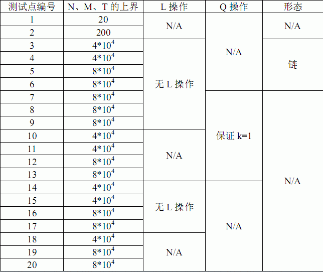

小 Z 有一片森林，含有 $N$ 个节点，每个节点上都有一个非负整数作为权值。初始的时候，森林中有 $M$ 条边。
小 Z 希望执行 $T$ 个操作，操作有两类：
Q x y k
L x y
为了体现程序的在线性，我们把输入数据进行了加密。设 $lastans$为程序上一次输出的结果，初始的时候 $lastans$ 为 $0$。
Q x^lastans y^lastans k^lastans
L x^lastans y^lastans
请写一个程序来帮助小 Z 完成这些操作。
第一行包含一个正整数 $testcase$，表示当前测试数据的测试点编号。保证 $1≤testcase≤20$。
第二行包含三个整数 $N$，$M$，$T$，分别表示节点数、初始边数、操作数。第三行包含 $N$ 个非负整数表示 $N$ 个节点上的权值。
接下来 $M$ 行，每行包含两个整数 $x$ 和 $y$，表示初始的时候，点 $x$ 和点 $y$ 之间有一条无向边，接下来 $T$ 行，每行描述一个操作，格式为Q x y k或者L x y，其含义见题目描述部分。
对于每一个第一类操作，输出一个非负整数表示答案。
1 8 4 8 1 1 2 2 3 3 4 4 4 7 1 8 2 4 2 1 Q 8 7 3 Q 3 5 1 Q 10 0 0 L 5 4 L 3 2 L 0 7 Q 9 2 5 Q 6 1 6
2 2 1 4 2

注：N/A表示没有特殊性
对于 $100\%$ 的测试数据：所有节点的编号在 $1...N$ 的范围内。节点上的权值$ \le 10^9$。$M<N$。
 Comet OJ
Comet OJ